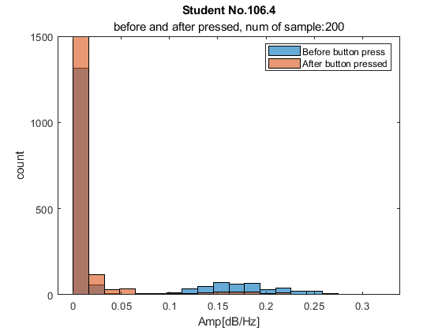

Contents
clear; clc; close all;
loading the data
Avigail's Path
path_data = 'C:\Users\Avigail Makbili\Documents\LunaMind\LunaMind\20-2-22\'; % Anat's path % path_data = 'G:\My Drive\Oren Shriki\LunaMind\Analyses\DATA\DATA_LunaMind\20-2-22\'; % path_data = 'G:\My Drive\Oren Shriki\LunaMind\Analyses\DATA\DATA_LunaMind\24-2-22\'; % subj_num = [101:112 114:118]; recordings_file = dir('20-2-22'); % prompt = 'Choose frequency range: 1-beta, 2-theta, 3-alpha, 4-delta: '; % i_freq = input(prompt); % i_freq = inputdlg(prompt); % beta 12.5-30Hz % theta 4-8Hz % i_freq = 2; % alpha raw 8-12Hz % i_freq = 3; % delta raw 0.5-4Hz % i_freq = 4; % num_freq = 4; % elec_names = ["TP9", "AF7", "AF8", "TP10"]; % x = (raw_data(:,1)-raw_data(1,1)); %time fs = 256; % Sampling frequency for s = 3:length(recordings_file)
if length(recordings_file(s).name) > 3 && recordings_file(s).name(1,5) == '_' continue end
loading file
path_subj = append(path_data, num2str(recordings_file(s).name));
[eeg_data, raw_data, out_data] = load_files(path_subj);
remove TP electrode
raw_data = remove_TP(raw_data);
Arrange the data
% raw data raw_data(:,1) = raw_data(:,1) * 1000; % equal the time stamp of out sub_elem = raw_data(1,1); % make outstam start with 0 for i=1:length(raw_data(:,1)) raw_data(i,1) = (raw_data(i,1)-sub_elem) / fs; end % out data out_data = out_data(2:end, :); sub_elem = out_data{1,1}; for i=1:size(out_data, 1) out_data{i,1} = (out_data{i,1} - sub_elem) /fs; end alpha_raw = create_alpha_raw(raw_data, "alpha");
button pressed and video state
out_button = zeros(1,2);
out_button = [];
video_state = zeros(1,3);
j = 0;
v = 0;
for i=1:size(out_data,1)
if strcmp(out_data{i,3},'button_pressed')
j = j+1;
out_button(j,1) = i; %save the row index
out_button(j,2) = out_data{i,1}; % save the time
end
if strcmp(out_data{i,3},'video_state')
v = v+1;
video_state(v,1) = i; %save the row index
video_state(v,2) = out_data{i,1}; % save the time
if strcmp(out_data{i,4},'video_pause')
video_state(v,3) = 0;
elseif strcmp(out_data{i,4},'video_play')
if out_data{i,4} == 'video_play'
video_state(v,3) = 1;
end
end
end
end
video_state_start_indicies = find(video_state(:,3) == 1);
video_state_start = video_state(video_state_start_indicies,:);
% take time sec before and after the press
ms_time = 200;
% ms_time = 50;
% all the data by the class
before_pressed = zeros(ms_time+1, length(out_button)); % time before the pressed
after_pressed = zeros(ms_time+1, length(out_button)); % time after the pressed
after_start_video = zeros(ms_time+1, length(out_button));% time after video play
for b = 1:size(out_button, 1)
time_preseed_raw_idx = find(alpha_raw > out_button(b,2)); % find the closet bottom pressed idx in raw (1)
time_play_out_idx = find(video_state_start(:,2) > out_button(b,2)); % find the idx time of the start video after button pressed in out
time_play_raw_idx = find(alpha_raw > video_state_start(time_play_out_idx(1), 2)); % find the idx time of the start video afeter button pressed in raw
if time_preseed_raw_idx(1) > ms_time
before_pressed(:,b) = alpha_raw(time_preseed_raw_idx(1)-ms_time:time_preseed_raw_idx(1),end);
else
before_pressed(:,b) = [zeros(ms_time+1-time_preseed_raw_idx(1),1); alpha_raw(1:time_preseed_raw_idx(1),end)];
end
if time_play_raw_idx(1)+ms_time < size(alpha_raw, 1)
after_pressed(:,b) = alpha_raw(time_preseed_raw_idx(1):time_preseed_raw_idx(1)+ms_time,end);
else
after_pressed(:,b) = alpha_raw(time_preseed_raw_idx(1):end,end);
end
after_start_video(:,b) = alpha_raw(time_play_raw_idx:time_play_raw_idx+ms_time, end);
end
before_pressed(isnan(before_pressed))=0;
after_pressed(isnan(after_pressed))=0;
plot histogram
mean_pressed = mean(before_pressed);
mean_after_pressed = mean(after_pressed);
% edges = 0:0.1:5;
All = [before_pressed;after_pressed];
edges = 0:max(All(:))/20:max(All(:));
if out_button
[N_before(s,:), edges_before(s,:), N_after(s,:), edges_after(s,:)] = plot_before_and_after_pressed(recordings_file(s).name, edges, before_pressed, after_pressed, ms_time);
Max(s,1) = edges_before(s,(find(N_before(s,:) == max(N_before(s,:)),1,'first'))+1);
Max(s,2) = edges_after(s,(find(N_after(s,:) == max(N_after(s,:)),1,'first'))+1);
All = [before_pressed;after_start_video];
edges = 0:max(All(:))/20:max(All(:));
[N_before(s,:),edges_before(s,:), N_resume(s,:), edges_resume(s,:)] = plot_before_pressed_and_after_video_resume(recordings_file(s).name, edges, before_pressed, after_start_video, ms_time);
Max(s,3) = edges_resume(s,(find(N_resume(s,:) == max(N_resume(s,:))))+1);
end
 Unable to perform assignment because the size of the left side is 1-by-1 and
the size of the right side is 1-by-20.
Error in main_plots (line 141)
Max(s,3) = edges_resume(s,(find(N_resume(s,:) == max(N_resume(s,:))))+1);
end % Analyse histogram bin count % p_befor_after = ranksum(Max(:,1),Max(:,2)); % p_befor_resume = ranksum(Max(:,1),Max(:,3));